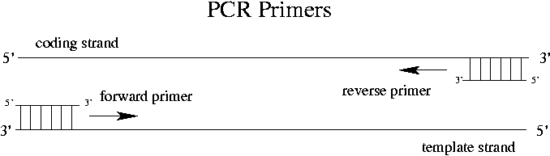

Day 3 Afternoon Lecture Notes
Steve Williams, Smith College
June 8, 2004
The standard way of screening is to use a DNA probe. Most commonly the probe is a cDNA clone. Why even bother to look at a genomic library if a cDNA is already available? Often the reason is to find out about non-coding regulatory sections of the gene: promoters, operators, etc. A cDNA library is easier to screen and prepare but a genomic library contains much more information.
A second type of DNA probe is a heterologous (het-er-AHL-ug-us) probe such as a gene from a closely related species. Another example would be to use DNA from a different gene from the same species and family. For example, adult hemoglobin DNA could be used to screen for the fetal hemoglobin gene. The RevT family may have as many as 105 members. We will use one RevT clone to find other members of the same gene family. In general about 70% of a sequence has to match in order for probing to work but only one portion of the probe has to match closely.
Radioactive labels used to be most common but safety concerns and disposal regulations are making these less common. The popular isotopes were 32P, 35S and 33P. More common now are fluorescent probes like fluorescein (floor-eh-scene), biotin and digoxigenin. Fluorescent probes are must faster than radioactive probes which can at times be more sensitive.
How many plaques do we need to test in order to have a 99% chance of getting one with a given single-copy gene if there are 1 million fragments? Typical laboratory practice is 7X coverage, that is 7 million clones screened for 1 million distinct fragments. A typical plate (6" x 6") holds about 50,000 plaques.
Our mouse genomic library cut by EcoR1 in experiment 1 has about 1 million fragments. RevT is much easier to screen for due to the many copies in the genome. >= 100 plaques should guarantee success.
In order to perform the plaque lift, place a nylon membrane on the surface of the plate. The membrane sucks up liquid including phage from each plaque. Peel the membrane off, taking about 10% of the phage from each plaque, about 105 in number.
The phage are lysed and DNA is denatured by NaOH. (In other words, DNA goes from double-stranded to single-stranded, but the individual strands aren't broken.) ssDNA is now stuck to the membrane in the position of all the original plaques.
The binding can be done with UV crosslinking in a dedicated chamber that delivers a controlled low does. Alternatively the membrane can be baked 1-2 hours at 80°C.
Expose the membrane to salmon sperm ssDNA fragments 100-200 nucleotides (nt) in length. This passivation step prevents probe DNA from binding non-specifically to the membrane. Salmon sperm DNA is used because of its low price. Yeast RNA is an alternative.
Denature the probe DNA and add it to the bag containing the membrane and the prehybridization solution.
Use a pipette or needle to remove the corresponding phage and transfer to a tube of buffer solution. If a screen shows that 3 or 4 plaques are positive, sequence all the DNA to see which one has the gene of interest.
The three major discoveries in molecular biology are the discovery of the structure of DNA in the 1950's, the development of early cloning methodologies in the 1970's, and the invention of PCR in 1986. Cloning recombinant DNA has 2 basic objectives: to identify a gene of interest in a complex mixture; and to "amplify" the gene and make many copies.
Consider the pgk2 single-copy gene of mouse. pgk2 is 3 kbp long out of 3-4x109 in the total mouse genome. With PCR all we need to know to amplify the gene is the beginning and the end of the pgk2 sequence so that we can make oligonucleotide primers. Primers can be purchased for as little as $20 for a 20-30 bp sequence. As small a primer as 15 bp may work. Turnaround time for primer orders can be as short as 48 hours.

RNA synthesis can proceed without a primer but DNA synthesis cannot. Note that the primers determine uniquely what sequence is amplified.
Taq polymerase comes from the thermophilic bacterium Thermus aquaticus from Yellowstone.
Ingredients needed for PCR:Note that the two primers are not complementary sequences. They are rather the different sequences of the two ends of the gene. Since DNA amplification cannot occur without a primer, impurity DNA in the solution does not get amplified. In the DNA replication process during normal cell division, an RNA primer is synthesized.
Multiplex PCR means amplifying many sequences at once. Using standard PCR a sequence up to a few thousand bp in length can be amplified. Special tricks can extend the limit to 20 kbp. PCR doubling tends to stop when the likelihood of two single strands finding each other is greater than their likelihood of finding primers. Usually this saturation occurs at about 30-40 cycles after 1.5-2 hours.
Up Previous Next